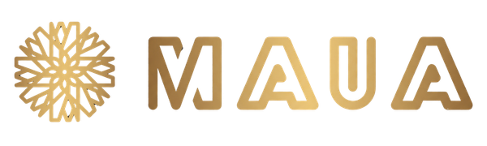
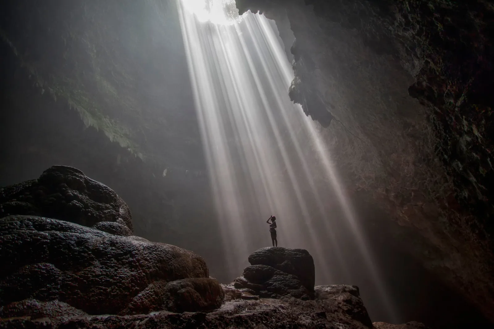
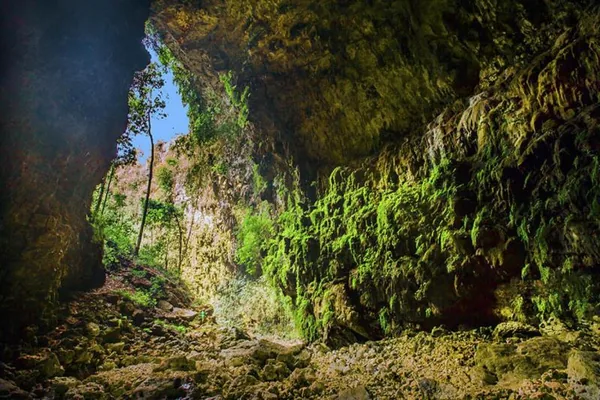

Open trip
Bergabung dengan peserta lain pada jadwal yang sudah tersedia. Pilihan untuk peserta individu atau kelompok kecil yang ingin berbagi pengalaman perjalanan.
Jadwal & kuota mengikuti paket

Rencanakan tripBlog MAUA · Cerita, destinasi & panduan
Dari kedalaman goa hingga luasnya cakrawala Jogja. Kenali pengalaman yang menantimu, cara ikut trip, dan cerita mereka yang sudah berangkat.
Yogyakarta & sekitarnya · Open trip & private trip

A little wonder. A new story.

Lebih dekat dengan alam.
Lebih banyak cerita.
01 / Tentang MAUA
MAUA Project menghadirkan pilihan pengalaman wisata alam di Yogyakarta dan sekitarnya, dengan vertical caving sebagai salah satu kegiatan utamanya. Kamu bisa mengenal sisi lain Jogja melalui penjelajahan goa, aktivitas sungai, hingga petualangan di alam terbuka.
Datang sendiri, bersama teman, atau dengan rombongan? Pilih open trip untuk bertemu peserta lain, atau private trip untuk perjalanan bersama kelompokmu. Kenali aktivitas dan fasilitas setiap paket agar pengalaman yang dipilih sesuai dengan rencanamu.
02 / Panduan layanan
Mulai dari jenis perjalanan yang cocok untukmu. Setelah itu, pilih destinasi dan jadwal yang tersedia.
Lihat cara pemesananBergabung dengan peserta lain pada jadwal yang sudah tersedia. Pilihan untuk peserta individu atau kelompok kecil yang ingin berbagi pengalaman perjalanan.
Jadwal & kuota mengikuti paket
Menjelajah bersama rombonganmu sendiri. Pilih tanggal sesuai ketersediaan paket dan diskusikan kebutuhan perjalanan dengan tim MAUA.
Perjalanan untuk kelompokmu
Kenali destinasi dan tentukan open trip atau private trip yang sesuai.
Cek jadwal, harga, kuota, aktivitas, fasilitas, dan meeting point pada paket.
Buat akun dan isi data peserta yang diminta pada proses pemesanan.
Ikuti instruksi transfer BCA, unggah bukti pembayaran, lalu tunggu konfirmasi tim.
Baca syarat dan ketentuan pada halaman pembayaran sebelum melanjutkan pemesanan.
03 / Kenali destinasi
Kenali pilihan pengalaman bersama MAUA, lalu temukan kegiatan yang sesuai dengan rencana perjalananmu.
Aktivitas, fasilitas, syarat peserta, serta ketersediaan mengikuti paket yang dipilih.
Lihat pilihan paket04 / Kata mereka
Pengalaman peserta bersama MAUA, dari momen pertama mencoba hingga keinginan untuk kembali.
Goa Ngeleng
Seru banget!! crewnya ramah, care, dan sangat mematuhi SOP keselamatan. Dapet temen baru ciwi-ciwi seruuu
Vertical Caving - Goa Ngeleng
So Much Fun! Pengalaman vertical caving di Goa Ngeleng bareng Maua Project unexpectedly seru pol! Dari awal sampai akhir kegiatannya exciting, menantang, tapi tetap fun. Guide-nya juga helpful dan selalu bikin kita feel safe selama kegiatan. Semua equipment udah prepared, jadi tinggal fokus menikmati adventure-nya. Dokumentasinya juga keren. Buat yang mau coba sesuatu yang beda, definitely worth to try!
Goa Ngeleng
shout out untuk semua para team maua project!! sangat memuaskan dan recommended, pelayanan ramah, proses pendaftaraan juga ga ribet tinggal isi di web ini. semua kakak2nya juga asik2, seru, dan baik. semoga bisa menjadwalkan trip berikutnya lagi di sini hehe semangat dan sukses selalu semua!!
05 / Sebelum berangkat
Gunakan informasi teknis dari tim untuk paket yang kamu pesan. Empat hal ini bisa menjadi awal persiapanmu.
Pahami karakter kegiatan dan persyaratan peserta. Sampaikan kondisi serta kebutuhan yang relevan sebelum booking.
Simpan lokasi dan waktu berkumpul. Atur perjalanan menuju titik temu sesuai informasi tim.
Periksa apa yang disediakan dan apa yang perlu dibawa sendiri. Ikuti daftar perlengkapan dari paketmu.
Simpan konfirmasi pemesanan dan kontak admin. Ikuti briefing serta arahan pemandu selama kegiatan.